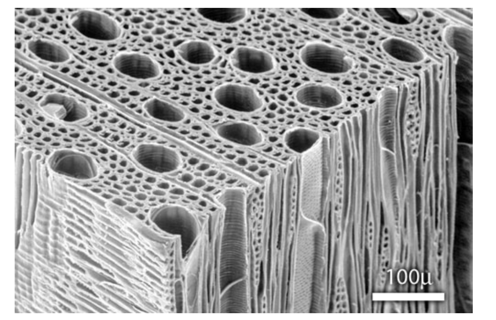
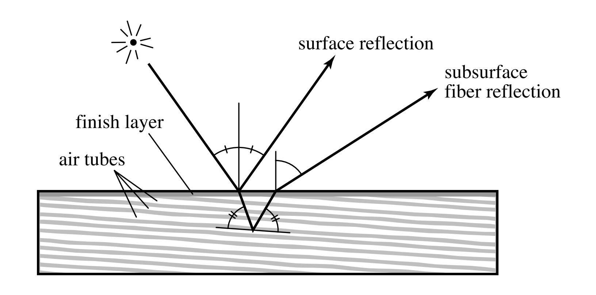
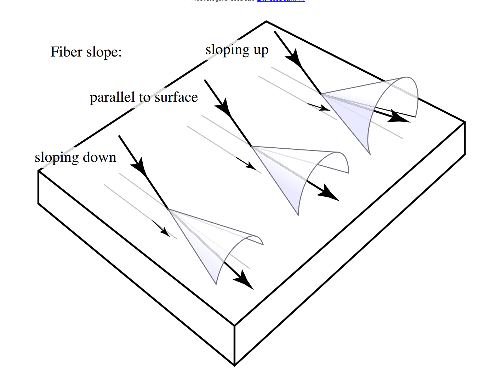

Modeling the Appearance of Finished Wood
by Sean McKenna
original paper by Marschner et al.
finished wood

wood features

wood fibers

modeling the BRDF

modeling the highlight

revolving wood

comparison to the paper


some list
- not ordered at all
- just a couple
- of items
ordered list
- let's now
- keep some
- order to
- all this
- MADNESS!
Some Quotes
inline: Some fanciful quote goes here."
and in block format:
Some fanciful quote goes here.
some code
vec3 crossProduct(vec3 A, vec3 B){
float Cx = A.y * B.z - A.z * B.y;
float Cy = A.z * B.x - A.x * B.z;
float Cz = A.x * B.y - A.y * B.x;
vec3 C = vec3(Cx, Cy, Cz);
return C;
}
list that comes over time
try this out
- the list
- comes slowly
an image